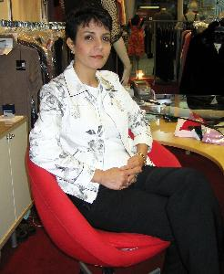

Professional Seamstress
Expert alterations on wedding gowns, evening and prom dresses
374 Rue Frontenac
Dollard-des-Ormeaux, QC H9G 1R5 (Get Directions)
Telephone: 514-620-8814
Our expertise is in wedding, prom and evening dresses. Unfortunately, we do not make dresses because it is time consuming. Price of alteration varies depending on the design and the required work. Therefore, no estimation will be given on the phone. Please only call us to make an appointment (for wedding gowns and evening dresses, appointment is necessary). You are welcome to visit us and show your clothes during our working hours. When you come to visit us, please tell us about your intentions: if you want to have a consultation or an alteration. If you would like to try on and ask for ideas on how to do the alteration, it is considered a “consultation”. There will be a fee. Price of alteration varies and it is include of the estimations, consultation and measurement time. But after the measurement if the customer, for any reason, wants to cancel the alteration or take back the clothes, there will be a fee. For consultation and canceling the alterations, the minimum fee is $60 to $120 and all the measurement pins will be taken off. Our goal is to do an excellence job on scheduled time and making our customers satisfied with mutual respect and honesty. That is why the time is precious!
Thank you.
Working Hours:
Monday-Friday: 9 AM to 5 PM
Saturday: 11 AM to 2 PM
Sunday: Closed

Search keyword: Seamstress, Tailor, Alterations, Alteration, Couturière, Bridal, Boutique, Wedding Dress Alteration, West Island, Montreal, Dressmaker West Island, Tailor West Island, Beaconsfield, Kirkland, Dollard-des-Ormeaux, Pointe-Claire, Valois, D.D.O., Pierrefonds, Dorval, Lachine, Fairview